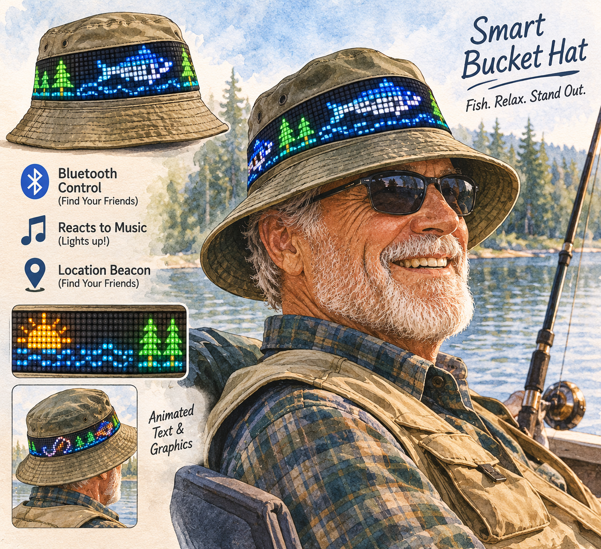
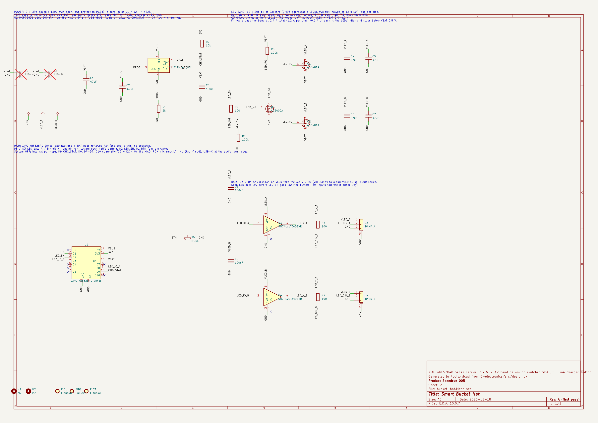

Out on the lake, lost in the crowd
The roll said angler. The tiki vibe said festival. The bucket hat already belongs to both.
Already owns three bucket hats
It's their uniform for a day on the water. This one would look like any other hat until they wake it: a fish jumping over the waves for the boat, the boat's name scrolling round the back, or nothing at all. In beacon mode the band stays dark and the battery could last for weeks, so the crew can find whoever wandered off down the shore.
Lost their friends by the second set
The hat would scroll their camp's name above the crowd and pulse with the bass. When everyone scatters, their friends' phones could pick up its Bluetooth signal and say "warmer" or "colder" until they're back together.
"Meet at the tiki bar."Scrolling round his hat above the crowd at dusk, while his friend's phone says she's getting warmer. Stage 2 concept art, the hosts' favourite.
A screen all the way round
This is the band's art from the CAD model, pixel for pixel. Pick a show to see what the hat would run once the app has sent it.
…Estimated from the design's power budget: two 1200 mAh cells, and about 0.4 mA for every LED, even a dark one. Nothing has been measured yet.
The band, not the hat
The product is the LED band a hat maker would sew into an ordinary bucket hat, so that's what the CAD models: an oval 182 × 208 mm and 39.6 mm tall, leaning in 7° to follow the crown, with the electronics pod hidden inside at the back. Drag to spin it.
- Pixel screen12 rows × 208 columns of square pixels at 2.8 mm, under a black louvre grid on a deep-navy ground. Unlit, the hat just has a dark band.
- Piping cordsA fabric cord along the top and bottom, where the band is sewn to the crown and the brim seam. A hat maker would wrap them in the hat's own cloth.
- Hidden podA charcoal TPU pod inside the back, behind the sweatband: the board, two flat cells, a mic port and an orange mode key. Nothing shows from outside.
- USB-C, facing downFold the sweatband down to charge. The two halves of the band plug into the pod, so the electronics could come out before the hat goes in the wash.
What's inside
One 50 × 34 mm two-layer board stands in the pod, leaning with the band. A Seeed XIAO nRF52840 Sense is soldered flat in the middle and brings the radio, the microphone and the motion sensor; the board around it only adds what a 2,496-pixel band needs.
The brain
Bluetooth 5 for the app and the friend-finder beacon, a PDM mic to hear the beat, a motion sensor for tap and nod gestures, and the USB-C port.
The screen
Two halves of 1,248 addressable RGB LEDs, both starting from the back seam, each with its own data line so a frame takes ~37 ms (about 25 fps).
Band power switch
Cuts the band's ~1 A idle draw whenever it isn't showing anything, and keeps it off at boot.
Clean data
Lift the 3.3 V data to the cell's full voltage, so it stays clean over ~30 cm of band carrying amps of LED current.
Unplug to wash
One plug per band half. Side-entry surface-mount plugs keep the board thin enough for the pod.
Faster charging
Charges at 500 mA, filling the pack in about 5 hours. The XIAO's own charger would take about a day.
Mode key
Under the sweatband: press for the next show, hold 2 s for beacon only, hold 5 s for off.
Power
Two ~1200 mAh pouch cells, one in each wing of the pod, to spread the weight round the back of the head.
Full bill of materials (… lines)
How we got here
Product Speedrun rolls five random ingredients, and two hosts take them from brainstorm to a routed board in one episode. This roll: an nRF52840, an angler, a wearable, a tiki vibe and "reacts to music".

ConceptThe angler's version, beside the festival poster above Control drawingFront, three-quarter and top views 3D modelThe band and its pod in Solidcraft 
ElectronicsThe schematic


What we still don't know
This is a speedrun first pass. Here's what we'd answer before anyone orders a board or sews a band into a hat.
- Runtime
About an hour of show, not a whole night
Addressable LEDs draw about 0.4 mA each even when dark, so 2,496 of them idle at around 1 A. Two 1200 mAh cells would give roughly 1–1.5 hours of show. Bigger cells, fewer rows or a scanned LED driver on the flex would all add time, and none has been chosen yet.
- Screen
The band isn't an off-the-shelf part
Stock flexible LED panels have 10 mm pixels. A 2.8 mm pitch means a custom two-layer flex with tiny 1515- or 1010-size LEDs. Whichever has the lowest idle current sets the runtime, and it needs measuring.
- Comfort
Is the pod comfortable?
It spans about a third of the band at the back of the head and is 13.6 mm deep, behind the sweatband. Shorter cells would make it ~26 mm shorter. Nobody has worn one yet.
- Controls
Where should the button live?
The mode key sits under the sweatband. A tap or a nod, read by the XIAO's motion sensor, could replace it without adding a visible button.
- Finding
Warmer or colder, not a map
Friends' phones would judge distance from the Bluetooth signal strength. Showing real positions on a map would need the wearer's phone to share its location: an app feature, not hardware.
- Board
Routed and checked, but never built
The first prototype has to confirm the XIAO's battery pads, which end its antenna is at, and that its USB-C path can feed the 500 mA charger.